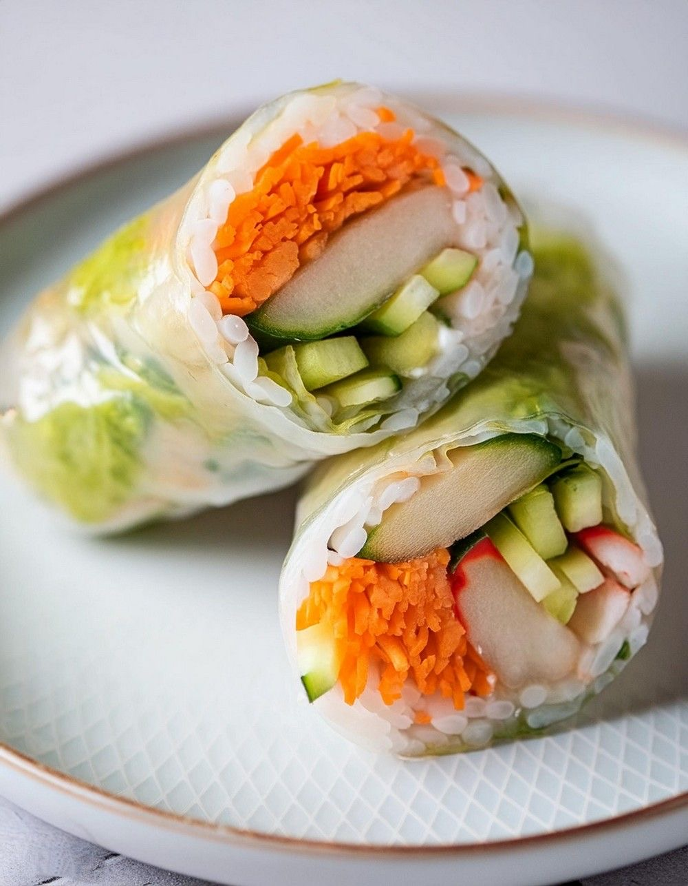
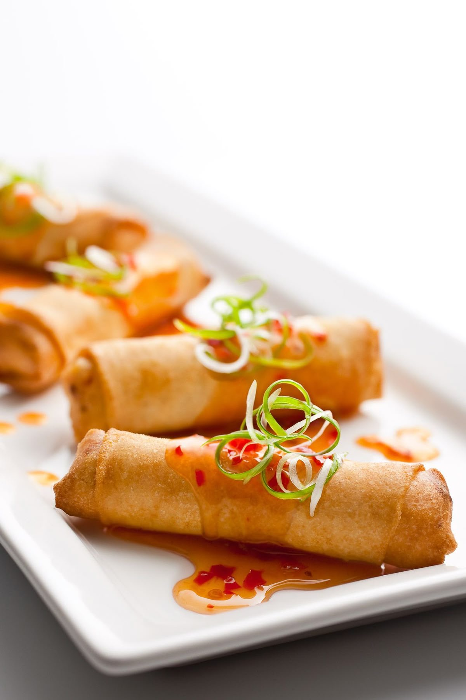
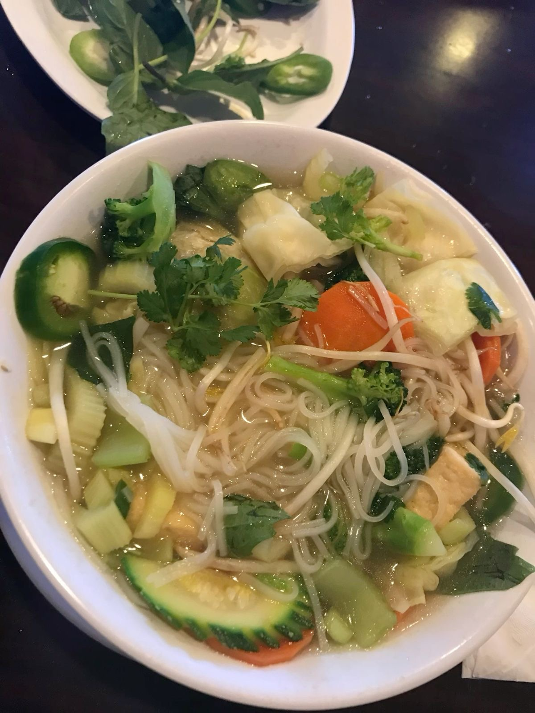
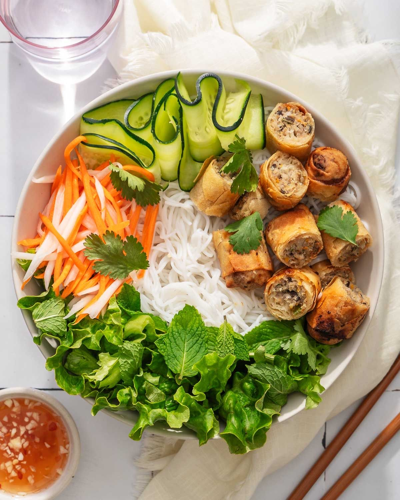
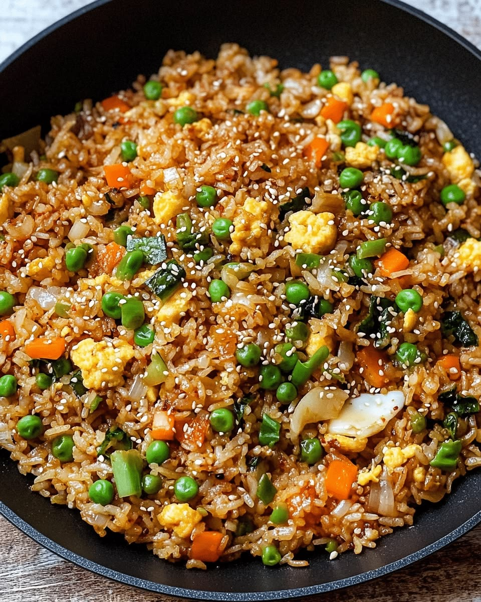
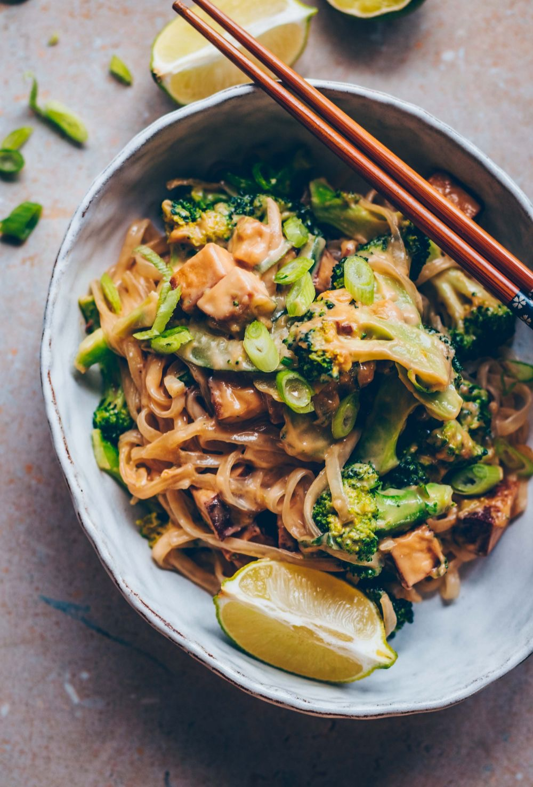
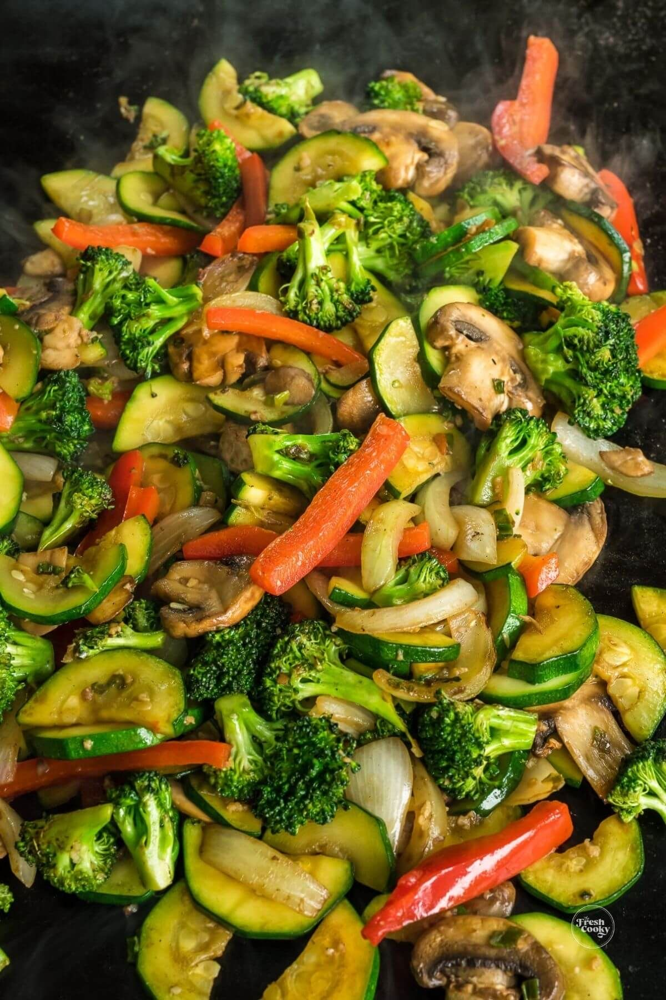
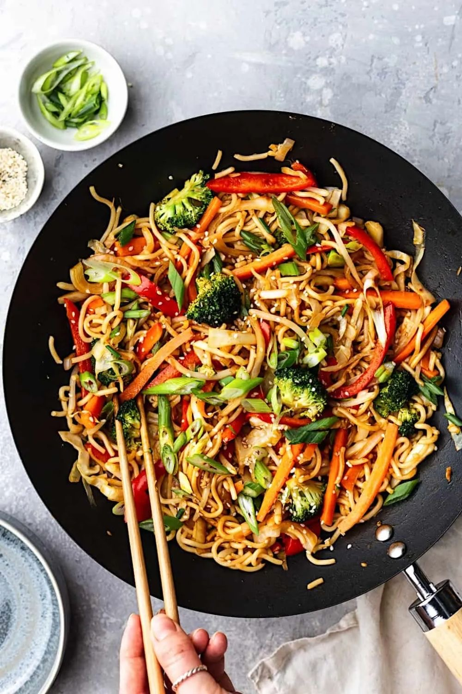
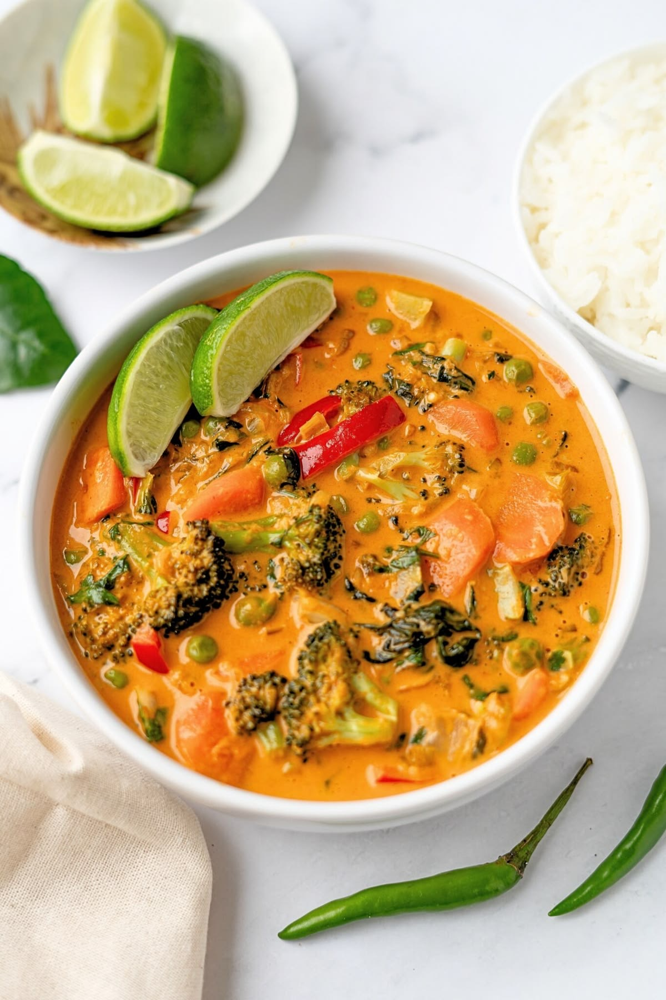

(4.) Gỏi Cuốn Chay
Fresh vegetarian spring rolls with vermicelli noodles, pickled radish/carrots, and lettuce ( 2 )
Served with our house-made peanut sauce

We do our best to offer a welcoming dining experience for our guests with various dietary needs. The restaurant's menu features several options that can accommodate different restrictions and preferences.
Our staff is happy to discuss ingredient modifications and preparation methods to ensure everyone can enjoy an authentic Vietnamese meal.
Fresh vegetarian spring rolls with vermicelli noodles, pickled radish/carrots, and lettuce ( 2 )
Served with our house-made peanut sauce

Crispy vegetarian egg rolls ( 3 )
Served with nước chấm (fish sauce)

Vegetarian phở with rice noodles, assorted vegetables (e.g., carrots, cabbage, and broccoli), white/green onions, cilantro, and a flavorful vegetable-based broth
Also served with beansprouts, basil, cilantro, lime, and jalapeños

Vermicelli noodles served with crispy vegetarian egg rolls ( 3 ), pickled carrots and radish, beansprouts, lettuce, and peanuts
Served with nước chấm (fish sauce)

Vegetarian fried rice with assorted vegetables, beansprouts, carrots, peas, and egg (optional)

Stir-fried rice noodles with white/green onions, peanuts, lime, and egg (optional)

Mix of stir-fried vegetables (i.e., broccoli, zucchini, mushrooms, and onions)
Served with your choice of steamed or hibachi fried rice along with our house-made white sauce

Stir-fried egg noodles with savory sauce and assorted vegetables including bell peppers

Vibrant and aromatic Thai dish that brings together creamy coconut milk, fragrant spices, and varying vegetables (i.e., broccoli, cabbage, carrots, onions, and cilantro)
Served with steamed rice

Notice: We are still in the process of figuring out which of our menu items are gluten-free. If you have a severe allergy, please exercise caution and speak with our staff before ordering.
Our phở is completely gluten-free thanks to its core ingredients: rice noodles, broth (made from beef bones and spices), meat, and fresh herbs. None of these contain wheat. Please avoid using hoisin sauce as it contains soy sauce.
Many of our dishes can be modified to suit your dietary needs — please don't hesitate to ask! While we take every precaution, please be aware that our kitchen handles meat, seafood, gluten, and common allergens. Cross-contamination is possible.
For questions about specific ingredients or preparation methods, please call us at (910) 803-0479 or email us at phovietsurf@gmail.com.